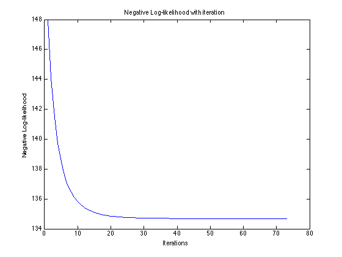

Contents
Logistic Regression
clc; clear; close all; % Type of target: options=1 for binary target, options=2 for multi-class options = 2; d = 3; max_iter = 450; eta = 0.5; % This is for 3 class regression c = 3;
Import training data
They both include four columns. The first column coded the target variable of ?apply to graduate school?, unlikely (0), or likely (1) in the binary data, and unlikely (0), somewhat likely (1), or very likely (2) in the 3-class data. The other three columns are three variables as follows: 1.parent, which is a 0/1 variable indicating whether at least one parent has a graduate degree; 2.public, which is a 0/1 variable where 1 indicates that the undergraduate institution is a public university and 0 indicates that it is a private university, 3.gpa, which is the student's grade point average.
In other words, each undergraduate student is described by x, which is a 3-dim vector. Can we make a prediction of his/her target t=?
if options == 1 train = importdata('logreg_data_binary.txt'); elseif options == 2 train = importdata('logreg_data_3class.txt'); end % Normalization x0 = train(:,2:4); t = train(:,1); n = size(x0,1); x = (x0-repmat(mean(x0),n,1))./repmat(std(x0),n,1); x = [ones(n,1) x]; norm_param = [mean(x0); std(x0)];
Training by Gradient Descent
if options == 1 W = zeros(d+1,1); W_threshold = repmat(0.0001, d+1, 1); elseif options == 2 wc0 = zeros(d+1,1); % [w0 w1 w2 w3] wc1 = zeros(d+1,1); wc2 = zeros(d+1,1); WWW = [wc0 wc1 wc2]; WWW_threshold = repmat(0.0001, d+1, 3); y = zeros(n,c); for i=1:n y(i,t(i)+1) = 1; end end for iter=1:max_iter if options == 1 % Train W W_prev = W; mu = 1./(1+exp(-(W'*x')')); grad = ((mu-t)'*x)'; W = W - eta./n*grad; NLL(iter) = -sum(t.*log(mu)+(1-t).*log(1-mu)); if abs(W_prev - W) < W_threshold break; end elseif options == 2 % Train WWW WWW_prev = WWW; mu = exp(WWW'*x')'./repmat(sum(exp(WWW'*x')',2),1,c); wc0 = wc0-eta./n*((mu(:,1)-y(:,1))'*x)'; wc1 = wc1-eta./n*((mu(:,2)-y(:,2))'*x)'; wc2 = wc2-eta./n*((mu(:,3)-y(:,3))'*x)'; WWW = [wc0 wc1 wc2]; NLL(iter) = -sum(sum(y'.*(WWW'*x'))'-log(sum(exp(WWW'*x')',2))); if abs(WWW_prev - WWW) < WWW_threshold break; end end end
Testing
if options == 1 test = importdata('test_data_binary.txt'); elseif options == 2 test = importdata('test_data_3class.txt'); end % Normalization x0 = test(:,2:4); t = test(:,1); n = size(x0,1); x = (x0-repmat(norm_param(1,:),n,1))./repmat(norm_param(2,:),n,1); x = [ones(n,1) x]; if options == 1 t_hat = (W'*x')'; t_pred = zeros(size(t)); t_idx = find(t_hat>=0.5); t_pred(t_idx) = ones(size(t_idx)); elseif options == 2 t_hat = (WWW'*x')'; [max,t_idx] = max(t_hat,[],2); t_pred = t_idx-ones(size(t_idx)); end
Results
plot(NLL); title('Negative Log-likelihood with iteration'); xlabel('Iterations'); ylabel('Negative Log-likelihood'); true_idx = find((t_pred - t)==0); right_ratio = size(true_idx,1)/n; if options == 1 fprintf('\nCoefficient W:\n'); W elseif options == 2 fprintf('\nCoefficient W:\n'); WWW end fprintf('\n Ratio of correctly predicted targets:\n'); right_ratio
Coefficient W:
WWW =
0.4681 -0.0836 -0.3845
-0.2806 0.0251 0.2555
0.0632 -0.3694 0.3062
-0.2023 -0.2479 0.4501
Ratio of correctly predicted targets:
right_ratio =
0.4667
